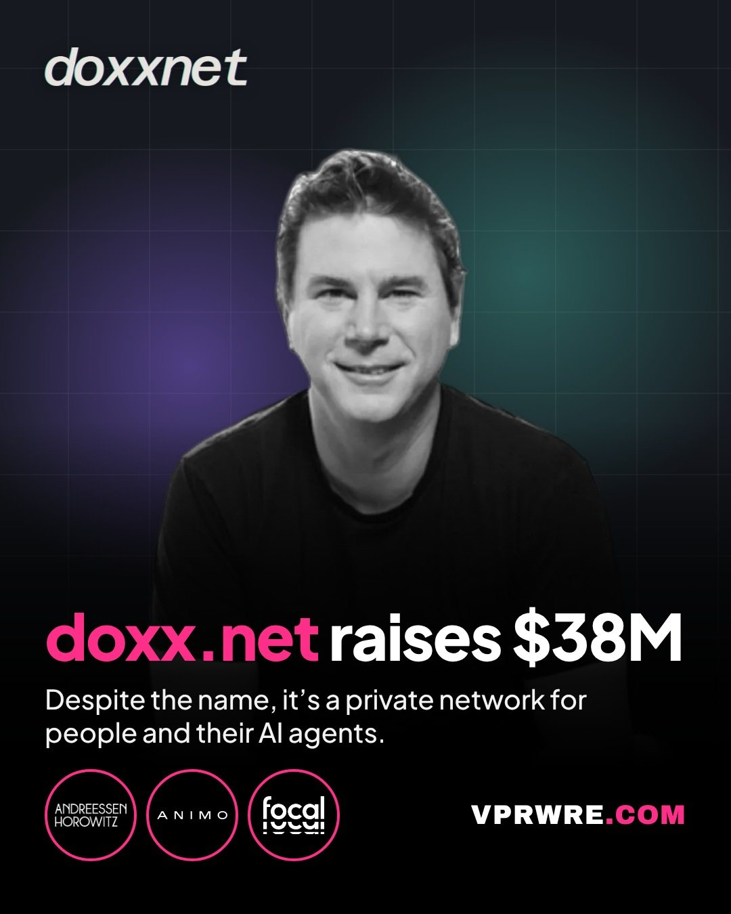

Funding
doxx.net raises $38M
doxx.net, a Miami startup building a private network for people and their AI agents, raised a $38 million Series A led by Andreessen Horowitz, with participation from Animo Ventures and Focal. Despite the name, it’s a privacy product: it offers encrypted calls, chat and file sharing with no one in the middle, and says you can sign up without an email or phone number. Founder and CEO Barrett Lyon previously founded Prolexic, which Akamai later bought for about $370 million.

FUN FACT: Lyon’s 2003 map of the internet is in the Museum of Modern Art’s collection. A year later, he helped track down a Russian hacker who was extorting websites with DDoS attacks, a story told in Joseph Menn’s book “Fatal System Error.”
FOUNDER: Barrett Lyon
INVESTORS: Andreessen Horowitz (a16z), Animo Ventures, Focal
AMOUNT: $38,000,000
HQ: Miami, Florida
The carousel
2 slides · Open on Instagram
Disclosure: VPRWRE drafts with Claude, Anthropic’s AI.